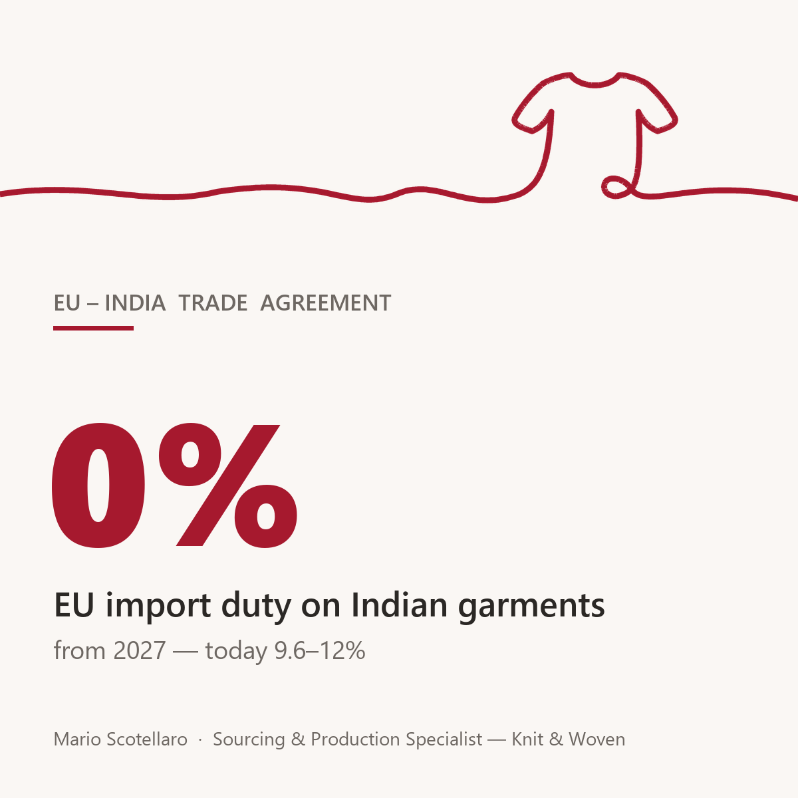

From early 2027, Indian garments will enter the EU duty free. The EU–India trade agreement signed in January removes the 9.6–12% tariff that has kept India out of many European costing sheets for years.
For two decades that duty was the silent reason brands defaulted to Bangladesh: same product, and India started the race ten points behind. That gap is about to close.
This doesn't mean India suddenly wins on everything. It stays strong where it has always been strong — cotton wovens, shirting, fine-gauge knitwear — and remains less competitive in several of the EU's top garment categories.
It does mean that if India is not in your sourcing mix today, the right time to run counter-samples and price comparisons is this season, not when the agreement enters into force. Development takes months, and the duty advantage of your current suppliers now has an expiry date.
I've been sourcing from India and the rest of South Asia for 21 years, and this is the biggest shift in the region's playing field since Bangladesh got duty-free access to Europe.